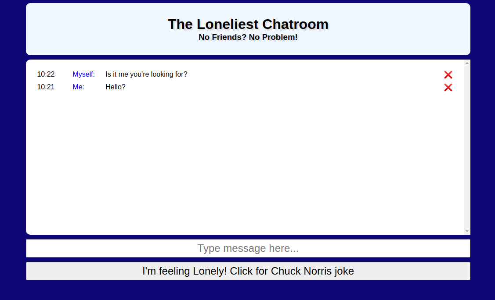

Description: This application allows users to create an account where they can then log-in and out of in order to browse, search, and save their preferred newly released movies.
Technology used: The Movie Database API, MongoDB, Express.js, React.js, Node.js, React Bootstrap, CSS,
Sweet Alert, Send Grid, JSON Web Tokens, Postman
Description: This application collects articles in an automated fashion from Y combinator on
the Hacker News Website that have 100 or more votes.
Technology Used: Puppeteer, Express.js, React.js, Node.js
Description: This is a landing page designed to attract the most enthusiastic of gamers.
Technology used: HTML, CSS

Description: This application was built for the purpose of family entertainment. The main page
consists of a movie plot that the user would then need to guess in order to advance to the next round.
There is also a search bar that the user can use if they are stuck.
Technology used: Open Movie Database API, React.js, CSS

Description: This application is essentially a chatroom where the user can submit a message as "Me","Myself", or "I" to
themselves. If the user gets lonely, they can click the "feeling lonely" button to get a funny Chuck Norris
Joke.
Technology used: chucknorris.io JSON API, HTML, CSS, VanillaJS